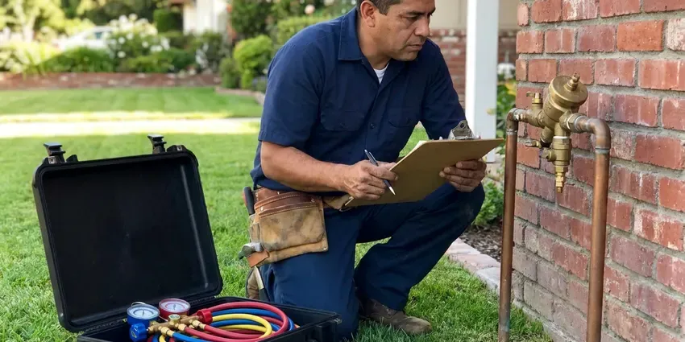

Hydrojet Plumbing in Hempstead, NY
We camera, jet and re-camera your lines in Hempstead, NY so you can see the difference before we leave.
- Before and After Camera Video
- Safe for Most Pipe Types
- Residential & Commercial Lines
- Experienced Technicians

Restore Full Drain Flow With Professional Hydrojetting in Hempstead, NY.
Call now to schedule hydrojetting and get a camera inspection of your line at the same time.
Advanced Hydrojet Plumbing Solutions for Hempstead, NY Homes
HCL Plumbing specializes in hydrojet plumbing, a powerful method for clearing the toughest clogs and buildup from your pipes. This service is ideal for homes and businesses in Hempstead, NY experiencing slow drains, frequent backups, or complete blockages that traditional snaking can't resolve.
Our expertise includes:
- Camera inspection before and after jetting with saved video
- Removes tough grease, scale, and root intrusions
- Deep cleaning for preventive maintenance

Additional Plumbing Maintenance Services in Hempstead, NY
Our maintenance and specialty plumbing services in Hempstead, NY catch small problems before they become emergencies.


Customers
Why Choose HCL Plumbing for Hydrojet Plumbing in Hempstead, NY?
Hydrojet plumbing is a superior solution for pipe cleaning, offering a level of thoroughness that traditional methods cannot match. It makes sure your plumbing system operates efficiently, reducing the likelihood of future blockages and costly repairs.
- Deep Clean, Hydrojetting cleans the whole pipe wall, removing debris and buildup, unlike snaking which only punches a hole.
- Chemical Free, We use only water, which is safe for your pipes, septic system and the surrounding environment.
- Verified Results, Before and after camera video shows exactly how much flow we restored.
Citywide Coverage
HCL Plumbing is focused on serving every neighborhood of Hempstead, ensuring that expert hydrojet plumbing services are always within reach. Whether you're in a historic district or a newer subdivision, we're equipped to handle your toughest plumbing problems.
Experienced Team
Our team has years of experience jetting New York drain lines, where scale, grease and roots are the most frequent problems. They know how to clean aggressively while respecting older pipe.
Safety-First Approach
Safety and compliance with local plumbing codes are paramount for every hydrojet plumbing service we perform in Hempstead, NY. We ensure all procedures are carried out safely, protecting both your property and our technicians.
Trusted Certified Hempstead Plumbing Services Professionals
At HCL Plumbing, we take pride in providing certified plumbing services throughout Hempstead, NY. Backed by recognized industry credentials, our experienced plumbers combine technical skill with genuine customer care. Whether it is repair, installation, or maintenance, we follow strict safety and quality standards to deliver long-lasting results you can trust.
Call Us Now PHCC Plumbing Contractor Recognition
PHCC Plumbing Contractor Recognition Better Business Bureau (BBB) Accreditation
Better Business Bureau (BBB) Accreditation Angi Certified Pro
Angi Certified Pro ISO 9001 Quality Management Certification
ISO 9001 Quality Management CertificationReliable Hydrojet Plumbing Services in Hempstead, NY
Tree Root Removal with Hydrojetting in Hempstead
Tree roots are a common problem for sewer lines in Hempstead, particularly with older homes and mature landscaping. Roots seek out moisture and can enter even tiny cracks, growing into dense masses that cause severe blockages and damage. Our hydrojet plumbing service uses specialized root-cutting nozzles to slice through these stubborn intrusions and wash them away, leaving your sewer line clear. This method is often more effective than traditional augers for complete root removal.

Emergency Hydrojet Services in Hempstead, NY
When you have a complete sewer line backup or a severely clogged main drain in Hempstead, NY, you need fast, effective help. HCL Plumbing offers emergency hydrojet plumbing services to address urgent blockages quickly. Our technicians are on standby to deploy high-pressure water jetting to clear the obstruction, restore flow, and prevent further damage or health hazards. Don't wait, call us right away for rapid response to your plumbing crisis.
Commercial and Restaurant Hydrojetting in Hempstead
Restaurants, hotels, apartment complexes and shopping centers rely on drains that handle heavy daily volume. We jet kitchen lines, floor drains and lines to grease interceptors to keep them flowing between pump-outs. Scheduled jetting helps businesses avoid backups during busy hours and stay in good standing with local pretreatment rules. We can work after closing to avoid disruption.
Main Sewer Line Hydrojetting in Hempstead
The main sewer line is critical to your home's plumbing system, and blockages here can cause significant issues throughout your property in Hempstead. Our hydrojetting service effectively clears main sewer lines of tree root intrusions, accumulated debris, and severe clogs that can lead to backups. We often perform a camera inspection first to identify the exact cause and location of the blockage, ensuring targeted and effective cleaning.
Grease Trap Line Cleaning in Hempstead, NY
For restaurants and commercial kitchens in Hempstead, NY, grease trap lines are subject to heavy grease and food particle buildup. This can lead to frequent clogs and potential health code violations. Our specialized hydrojetting service thoroughly cleans these lines, ensuring proper drainage and preventing costly backups. Regular cleaning helps maintain compliance and smooth operations.
Hydrojetting for Cast Iron Pipes in Hempstead, NY
Many older homes in Hempstead, NY have cast iron drain pipes, which are susceptible to corrosion and scaling over time. Our hydrojetting service is carefully calibrated to clean cast iron pipes without causing damage, removing rust, scale, and other mineral deposits that restrict flow. This extends the life of these aging pipes and improves drainage significantly.
Sewer Camera Inspection Before Hydrojetting in Hempstead
Before performing any hydrojet plumbing in Hempstead, HCL Plumbing usually conducts a thorough sewer camera inspection. This allows us to correctly diagnose the type, location, and severity of the blockage, as well as assess the condition of your pipes. Knowing if there is existing damage like cracks or collapses helps us determine the right pressure and nozzle, ensuring the hydrojetting process is safe and effective, especially for lines under older slabs and foundations.

Storm and Yard Drain Jetting in Hempstead, NY
Yard drains, channel drains and downspout lines fill with sand, silt and leaves between storms. When the rain comes, a blocked line sends water back toward the house. Coastal areas face storm surge and flooding, which can damage water heaters and boilers installed at basement level. We jet these lines clear before the rainy season or after a big storm. Clean storm lines carry runoff away from foundations the way they were meant to.
Hydrojet Drain Cleaning Near Me in Hempstead, NY
HCL Plumbing is your go-to local expert for hydrojet plumbing solutions, offering reliable service across Hempstead, NY. Our proximity means that we can respond quickly to your needs, bringing professional equipment and experienced technicians directly to your door.
Searching for hydrojet plumbing near me usually means a clog keeps coming back. Our jetting crews work throughout Hempstead and can often schedule service the same or next day. We bring the camera, the jetter and the right nozzles on the first visit.
HCL Plumbing at a Glance
- Licensed and insured plumbers serving Hempstead, NY
- Same-day appointments and 24/7 emergency response
- Clear written estimates, no hidden fees
- 4.8-star rated by 520+ New York customers
Hempstead Map
Hempstead Information
- Population
- 58,225
- Area codes
- Local
- Service area
- Hempstead and communities within 40 miles
- Nearby
- Levittown, New York, New Rochelle, Mount Vernon
Mineral scale inside drain lines and roots in old sewer joints both restrict flow in Hempstead, NY homes, so hydrojetting is one of the most effective ways to restore full flow. Frost reaches deep into the ground here, so water service lines must be buried well below the surface to avoid freeze damage.
Expert Services
Trust our professionals for reliable HCL Plumbing solutions in Hempstead, NY.
Our Specialized Plumbing Services in Hempstead, NY
At HCL Plumbing, we provide a complete range of plumbing services across Hempstead, NY. From leak detection to full system installations, our team ensures fast, precise, and affordable service for both residential and commercial properties. Explore our core services below:


How Our Hydrojet Plumbing Process Works in Hempstead, NY
Our hydrojet plumbing process is designed for real effectiveness and minimal disruption to your home or business.
Request a Quote
Call (716) 396-7101 and describe your drain problem and how often it recurs. We schedule a visit and give you jetting pricing in advance.
Camera Inspection
We run a camera through the line to check pipe condition and locate the blockage. Then we choose the right nozzle and pressure for your pipe.
Jet and Verify
We jet the line from end to end and flush the debris. A follow-up camera pass shows you the clean pipe before we go.
Frequently Asked Questions About Hydrojet Plumbing in Hempstead
Residential hydrojetting in Hempstead typically costs $400 to $900, including a camera inspection. Commercial lines, long runs or heavy root intrusion can cost $800 to $2,000 or more. We give you a firm price after reviewing the line.
While hydrojetting provides a thorough clean, some underlying issues like severely damaged or collapsed pipes might cause clogs to return. If a clog reappears shortly after our hydrojet service, we'll investigate further, often with another camera inspection, to identify any structural problems that might require repair or replacement, and review warranty options.
Most residential jobs take one to three hours, including camera inspections. Commercial lines with multiple runs can take a half day or more. We give you an estimate when we book.
It is safe for most cast iron, clay, ABS and PVC lines in reasonable condition. We always inspect with a camera first and lower the pressure or recommend another method if the pipe is cracked or badly corroded. That step protects weak lines.
When performed by a trained professional, hydrojetting is usually safe for most types of pipes, including older cast iron or PVC. However, severely damaged, corroded, or fragile pipes might not withstand the high pressure. This is why HCL Plumbing always recommends a pre-service camera inspection to assess pipe integrity before proceeding with hydrojet plumbing.
Rental jetters exist, but high pressure can injure you or damage a weak pipe if used incorrectly. Without a camera you also cannot tell whether the line is clean or broken. Professional jetting is safer and usually more effective.
Snaking involves using an auger to punch a hole through a clog, usually leaving behind some debris. Hydrojetting, on the other hand, uses high-pressure water to thoroughly scour the entire inner surface of the pipe, removing buildup and leaving it clean. Hydrojetting provides a much more complete and longer-lasting solution.
Most homes only need jetting every few years or when clogs recur. Restaurants and busy commercial kitchens usually benefit from jetting every three to six months. We recommend a schedule based on what the camera shows.
What People Are Saying About Our Plumbing Experts?

James P.
Our commercial plumbing system had a leak under the sink, and HCL Plumbing handled it professionally. The plumbers arrived quickly and restored everything without disruption to our customers.
Commercial Plumbing · Hempstead, NY
Sofia M.
Two new toilets installed in one visit, no mess left behind, and the tech even adjusted a faucet he noticed was dripping. Fair pricing and really friendly.
Toilet Installation · Levittown, NYLaura S.
I scheduled a water heater replacement, and the team made the process smooth and affordable. The new unit works perfectly, and they cleaned up after completing the job.
Water Heater Replacement · Yonkers, NY
Patricia H.
We had a slab leak that two other companies could not find. HCL Plumbing located it in under an hour, explained our options, and the price matched the quote to the dollar.
Slab Leak Repair · Hempstead, NY
Emily R.
I called HCL Plumbing for plumbing repair, and the technician was fast, polite, and thorough. They explained the problem clearly and fixed it the same day. I will definitely hire them again. Highly recommended!
Plumbing Repair · New Rochelle, NY
Daniel K.
A pipe burst at 11 pm and they actually answered. The plumber showed up within the hour, shut everything down, and had us back to normal the next morning. Could not ask for more.
Emergency Plumbing · Levittown, NY